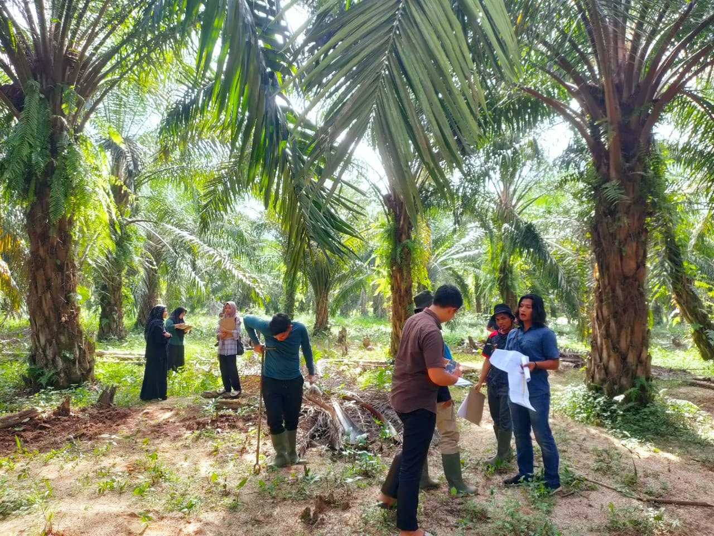
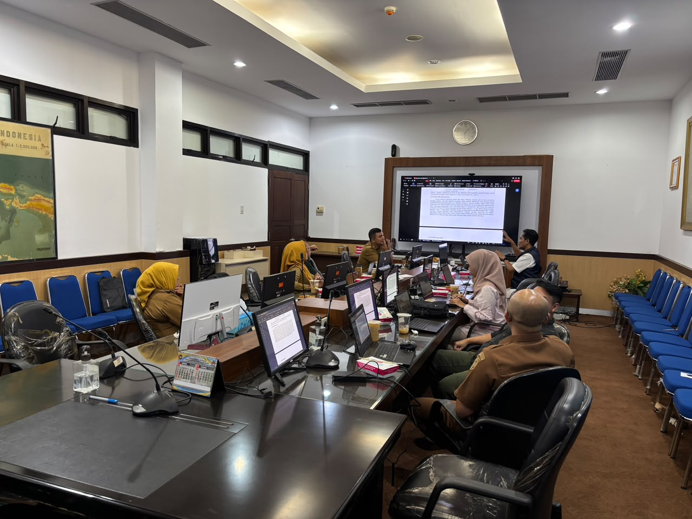
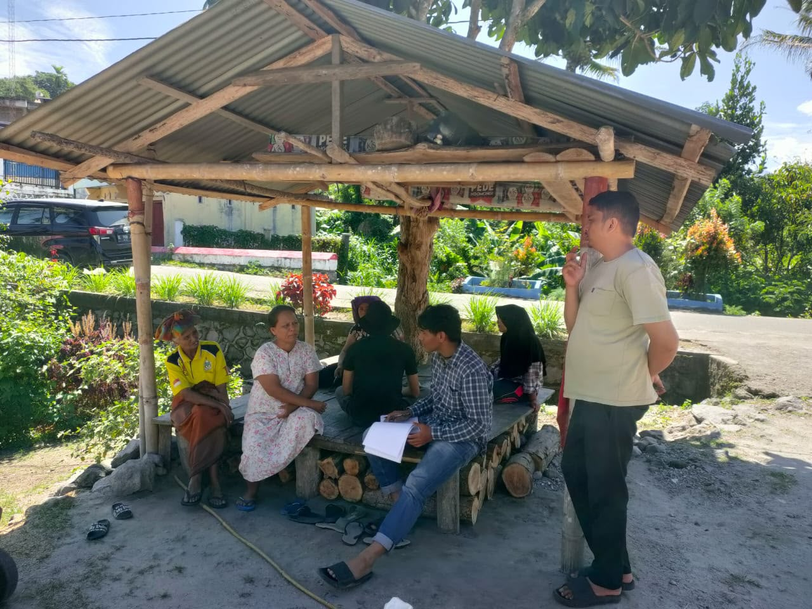

PAG Alliance menghubungkan akademisi dari 8 perguruan tinggi Indonesia untuk menjawab tantangan nyata — ketahanan pangan, kesehatan masyarakat, inovasi digital, dan pembangunan berkelanjutan.
PAG Alliance (Participatory Action Global Research Alliance) adalah yayasan riset partisipatif yang lahir dari kolaborasi akademisi terkemuka Indonesia untuk mendorong kerja sama lintas disiplin dan lintas batas dalam mengatasi tantangan pembangunan. Berdiri resmi sejak 2026 dengan akta notaris, NIB, dan legalitas lengkap di bawah Keputusan Menteri Hukum RI Nomor AHU-0013422.AH.01.04.Tahun 2026, yayasan ini dibangun dari dedikasi bersama antara akademisi, peneliti, praktisi, serta mitra pembangunan.
PAG berfungsi sebagai jembatan antara penelitian akademis, aksi komunitas, dan kebijakan publik, yang bekerja di bidang ketahanan pangan, kesehatan masyarakat, mata pencaharian pedesaan, ketahanan bencana, transformasi digital, AI, serta perumusan kebijakan berbasis bukti. Melalui pendekatan partisipatif, kami mengubah bukti ilmiah menjadi aksi nyata yang inklusif demi mewujudkan masyarakat yang tangguh, sehat, dan berkelanjutan.
Ibu hamil dianalisis dalam studi surveilans anemia Lombok Utara — model ML dengan akurasi 87.7%, AUC 0.97
Provinsi terdampak: Aceh, Sumatera Barat, Jawa Barat, Jawa Timur, Sulawesi Selatan, NTB — dengan pipeline hibah aktif
Proposal & grant aktif 2025–2026: BIMA Kemdiktisaintek, BRIDA, BPDPKS GRS, hingga kolaborasi internasional dengan University of Michigan



Dari Aceh hingga Kalimantan — riset PAG Alliance menjangkau berbagai wilayah Indonesia dengan fokus dampak nyata di tingkat daerah.
TABRIE–BRIGHT mHealth
InternasionalDashboard Anemia & AI Pangan
AktifValue Chain KEK
AktifDSS Prioritisasi PSR Sawit
DisubmitSebagian proyek yang telah dan sedang dijalankan tim PAG Alliance di berbagai skema hibah nasional dan internasional sepanjang 2025–2026.
K-Means clustering + Random Forest (Acc 87.7%, AUC 0.97). Target jurnal: Informatics for Health and Social Care, Taylor & Francis.
Web app + LLM (Gemini 1.5 Flash) untuk 50 peserta. Intervensi stunting dan penyakit tidak menular pada keluarga muda.
ML + remote sensing untuk prioritisasi replanting lahan sawit rakyat. Roadmap 3 tahun lintas PT.
Platform telehealth untuk komunitas Aceh. Estimasi subject pool, success metrics, dan gap analysis kolaboratif.
Hilirisasi 5 komoditas: batu bara, CPO, udang, rotan, sasirangan. Digital twin gap analysis untuk KEK Kotabaru.
Platform sirkular ekonomi pertanian untuk kompetisi inovasi pangan internasional. Fokus food security & waste reduction.
Bergabung ke klaster riset sesuai kepakaran. Akses jaringan hibah nasional dan internasional (FAO, ADB, Kementerian RI, BPDPKS).
Daftar →Kolaborasi riset terapan dan pemberdayaan komunitas di wilayah Anda. Dinas, BRIDA, dan pemerintah daerah dipersilakan.
Hubungi →Dukung riset berbasis bukti yang menghasilkan dampak nyata. Pipeline hibah tersedia untuk kolaborasi strategis jangka panjang.
Jadi Donor →